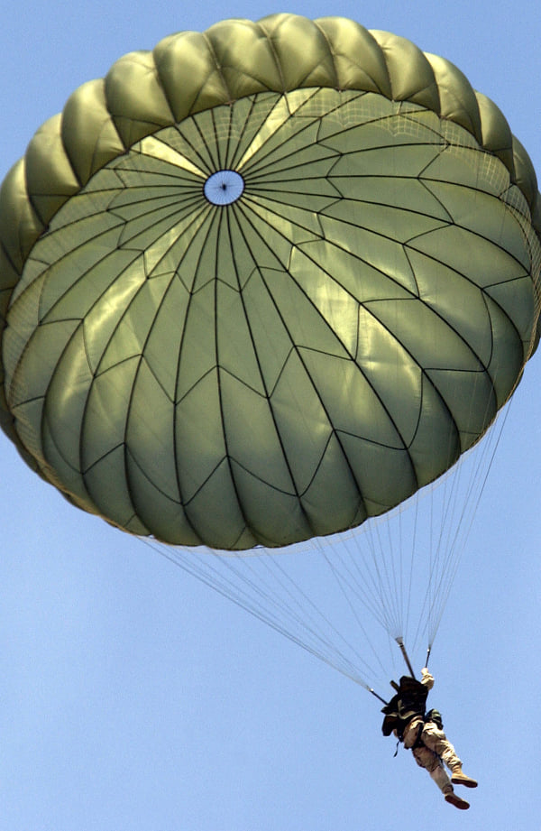

Az ejtőernyőzést szabadidős tevékenységként és versenysportként végzik, és az ezzel járó kockázatok miatt széles körben extrém sportnak számít. 2018-ban 3,3 millió ugrás történt az Egyesült Államokban. A modern hadsereg az ejtőernyőzést alkalmazza a légideszant erők és felszerelések bevetésére. A különleges hadműveleti erők általában az ejtőernyős ugrást, különösen a szabadeső ejtőernyőzést alkalmazzák behelyezési módszerként. Alkalmanként az erdõtûzoltók, akiket az Egyesült Államokban "füstöltõknek" neveznek, ejtõernyõzést alkalmaznak, hogy gyorsan bekerüljenek az erdõtüzek közelébe, különösen távoli vagy más módon elérhetetlen területeken.
